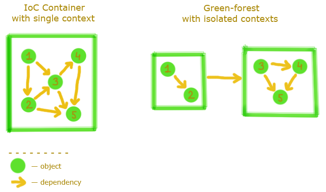

Green-forest Framework Reference Guide
Overview
is the simple IoC Container with Action-Handler Architecture.
It's not a competitor for or but it's a powerful addition for this frameworks.
You can use for a single class implementation and for a complex business logic.
Features
IoC Container
With you can separate your application's logic into simple atomic classes.
The framework organizes communications between this classes.
Also you can add an external object into invocation context and use it by dependency injection.
Isolated contexts
You can use one inside another like external object.
In this way you can separate a big application context to few small isolated contexts that use each other.
Take a look for the illustrating picture:

Difference between single and isolated contexts
Action-Handler Architecture
API of has only one method: invoke.
This method takes Action object with input data, finds targeted Handler and return handler's output.
Example:
//create Green-forest Engine
Engine engine = new Engine();
//register some handler
engine.putHandler(SomeActonHandler.class);
//invoke some action and get result
String result = engine.invoke(new SomeAction("some data"));